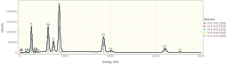
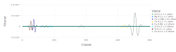
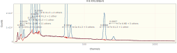
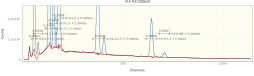
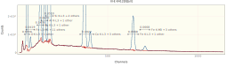

Quick Quantifying K412 using NeXLSpectrum VectorQuant
Fred Schamber taught me this trick for quantifying spectrum extremely quickly. It works reasonably well for a moderate number of ROIs, particularly when few of the ROIs interfere.
Use the NeXLSpectrum to load, plot, fit and report the quantification of a set of K412 spectra.
Loading NeXLSpectrum also automatically makes NeXLCore and NeXLUncertainties available.
Loading the Gadfly library adds plotting support to NeXLSpectrum.
using NeXLSpectrum # Provides spectrum reading and fitting tools
using NeXLMatrixCorrection # Provides `quant` to convert k-ratios to mass fraction.
using Gadfly # Plotting
using DataFrames, Latexify # TablesRead in the Spectra
path = joinpath(@__DIR__, "K412 spectra")
# Load the unknowns
unks = map(0:4) do i
loadspectrum(joinpath(path, "III-E K412[$i][4].msa"))
end
# Create a detector model to match the unknown spectra
det = matching(unks[1], 132.0, 10)BasicEDS[4096 chs, 1.63032 + 9.99856⋅ch eV, 132.0 eV @ Mn K-L3, 10 ch LLD,
[Be,Sc,Ba,Pu]]| Name | BeamEnergy | ProbeCurrent | LiveTime | RealTime | Coating | Integral | Material |
|---|---|---|---|---|---|---|---|
| III-E K412[0][all] | 2e+04 | 1.114 | 235.5 | 286.3 | nothing | 8.08e+06 | K412 |
| III-E K412[1][all] | 2e+04 | 1.114 | 235.4 | 286.2 | nothing | 8.077e+06 | K412 |
| III-E K412[2][all] | 2e+04 | 1.112 | 235.5 | 286.3 | nothing | 8.084e+06 | K412 |
| III-E K412[3][all] | 2e+04 | 1.11 | 235.4 | 286.3 | nothing | 8.087e+06 | K412 |
| III-E K412[4][all] | 2e+04 | 1.11 | 235.4 | 286.2 | nothing | 8.081e+06 | K412 |
Notice that the spectra all have 1) live-time (:LiveTime); 2) probe-current (:ProbeCurrent); 3) take-off angle (:TakeOffAngle); 4) beam energy (:BeamEnergy); and detector (:Detector) properties defined. These properties are necessary for extracting the k-ratios and estimating the composition.
unks[1][:LiveTime], unks[1][:ProbeCurrent], unks[1][:TakeOffAngle], unks[1][:BeamEnergy](235.48403, 1.11355, 0.6108652381980153, 20000.0)The Unknowns
display(plot(unks..., klms=[n"O",n"Mg",n"Al",n"Si",n"Ca",n"Fe"], xmax=8.0e3))
The Reference Spectra
Build a convenient structure so it is easy to appreciate the necessary information and to splat it into filteredReference.
ffrs = references( [
reference(n"Al", joinpath(path, "Al2O3 std.msa"), mat"Al2O3" ), #
reference(n"Mg", joinpath(path, "MgO std.msa"), mat"MgO" ), #
reference(n"Fe", joinpath(path, "Fe std.msa"), mat"Fe" ), #
reference(n"Si", joinpath(path, "SiO2 std.msa"), mat"SiO2" ), #
reference(n"O", joinpath(path, "SiO2 std.msa"), mat"SiO2" ), #
reference(n"Ca", joinpath(path, "CaF2 std.msa"), mat"CaF2" )
], det)
display(plot( spectra(ffrs)..., klms= [n"O",n"Mg",n"Al",n"Si",n"Ca",n"Fe"], xmax=8.0e3))
Filter the Reference Spectra and Compute the VectorQuant Structure
vq = VectorQuant(ffrs)
plot(vq, 1:800)
Let's take a look at a residual spectrum by plotting one of the FilterFitResult objects. Perform the fit and look at the residual
res = map(unks) do unk
fit_spectrum(vq, unk)
end
plot(res[1])
Compare this with the weighted fit
resfull = map(unks) do unk
fit_spectrum(unk, ffrs)
end
plot(resfull[1])
Now the full data set...
| Spectra | k[O K-L3 + 1 other, SiO2] | Δk[O K-L3 + 1 other, SiO2] | k[Fe L3-M5 + 13 others, Fe] | Δk[Fe L3-M5 + 13 others, Fe] | k[Mg K-L3 + 1 other, MgO] | Δk[Mg K-L3 + 1 other, MgO] | k[Al K-L3 + 2 others, Al2O3] | Δk[Al K-L3 + 2 others, Al2O3] | k[Si K-L3 + 2 others, SiO2] | Δk[Si K-L3 + 2 others, SiO2] | k[Ca K-L3 + 3 others, CaF2] | Δk[Ca K-L3 + 3 others, CaF2] | k[Fe K-L3 + 1 other, Fe] | Δk[Fe K-L3 + 1 other, Fe] | k[Fe K-M3 + 3 others, Fe] | Δk[Fe K-M3 + 3 others, Fe] |
|---|---|---|---|---|---|---|---|---|---|---|---|---|---|---|---|---|
| III-E K412[0][all] | 0.6467 | 0.0007376 | 0.04256 | 0.0002578 | 0.1473 | 0.0001671 | 0.06691 | 0.0001272 | 0.3508 | 0.0002609 | 0.1922 | 0.0002178 | 0.06683 | 0.0001458 | 0.06666 | 0.000567 |
| III-E K412[1][all] | 0.6488 | 0.0007384 | 0.04224 | 0.0002569 | 0.1472 | 0.0001671 | 0.0667 | 0.0001273 | 0.3499 | 0.0002607 | 0.1916 | 0.0002176 | 0.06701 | 0.000146 | 0.06714 | 0.0005672 |
| III-E K412[2][all] | 0.6492 | 0.0007397 | 0.04252 | 0.0002581 | 0.1477 | 0.0001675 | 0.06702 | 0.0001276 | 0.3511 | 0.0002615 | 0.1922 | 0.000218 | 0.06683 | 0.0001461 | 0.06683 | 0.0005687 |
| III-E K412[3][all] | 0.6537 | 0.0007428 | 0.042 | 0.000258 | 0.1479 | 0.0001678 | 0.06708 | 0.0001277 | 0.3518 | 0.0002619 | 0.1926 | 0.0002184 | 0.06684 | 0.0001463 | 0.06759 | 0.0005694 |
| III-E K412[4][all] | 0.6522 | 0.0007423 | 0.04159 | 0.0002581 | 0.1479 | 0.0001677 | 0.06722 | 0.0001278 | 0.3518 | 0.0002618 | 0.192 | 0.0002184 | 0.06687 | 0.0001462 | 0.06634 | 0.0005689 |
| Spectra | k[O K-L3 + 1 other, SiO2] | Δk[O K-L3 + 1 other, SiO2] | k[Fe L3-M5 + 13 others, Fe] | Δk[Fe L3-M5 + 13 others, Fe] | k[Mg K-L3 + 1 other, MgO] | Δk[Mg K-L3 + 1 other, MgO] | k[Al K-L3 + 2 others, Al2O3] | Δk[Al K-L3 + 2 others, Al2O3] | k[Si K-L3 + 2 others, SiO2] | Δk[Si K-L3 + 2 others, SiO2] | k[Ca K-L3 + 3 others, CaF2] | Δk[Ca K-L3 + 3 others, CaF2] | k[Fe K-L3 + 1 other, Fe] | Δk[Fe K-L3 + 1 other, Fe] | k[Fe K-M3 + 3 others, Fe] | Δk[Fe K-M3 + 3 others, Fe] |
|---|---|---|---|---|---|---|---|---|---|---|---|---|---|---|---|---|
| III-E K412[0][all] | 0.6556 | 0.0008134 | 0.04191 | 0.0004382 | 0.1476 | 0.0001834 | 0.06698 | 0.000159 | 0.3508 | 0.000289 | 0.1922 | 0.0002326 | 0.06683 | 0.0001593 | 0.06684 | 0.0006722 |
| III-E K412[1][all] | 0.6574 | 0.0008141 | 0.04157 | 0.0004372 | 0.1475 | 0.0001835 | 0.06674 | 0.000159 | 0.35 | 0.0002889 | 0.1916 | 0.0002324 | 0.06708 | 0.0001595 | 0.06738 | 0.0006721 |
| III-E K412[2][all] | 0.658 | 0.0008157 | 0.04192 | 0.0004381 | 0.1479 | 0.0001838 | 0.06708 | 0.0001594 | 0.3513 | 0.0002897 | 0.1922 | 0.0002329 | 0.06688 | 0.0001596 | 0.06704 | 0.0006737 |
| III-E K412[3][all] | 0.6624 | 0.0008188 | 0.04146 | 0.0004379 | 0.1481 | 0.0001841 | 0.06715 | 0.0001595 | 0.352 | 0.0002901 | 0.1925 | 0.0002333 | 0.06682 | 0.0001598 | 0.0678 | 0.0006746 |
| III-E K412[4][all] | 0.6608 | 0.0008182 | 0.04082 | 0.0004383 | 0.1482 | 0.0001841 | 0.06728 | 0.0001597 | 0.3519 | 0.0002901 | 0.1922 | 0.0002333 | 0.06694 | 0.0001598 | 0.06648 | 0.0006739 |
Compare the timings (full then fast)
using BenchmarkTools
@btime map(unk->fit_spectrum(unk, ffrs), unks)
@btime map(unk->fit_spectrum(vq, unk), unks)3.245 ms (7812 allocations: 1.87 MiB)
603.500 μs (1297 allocations: 434.02 KiB)
5-element Vector{FilterFitResult}:
III-E K412[0][all]
III-E K412[1][all]
III-E K412[2][all]
III-E K412[3][all]
III-E K412[4][all]